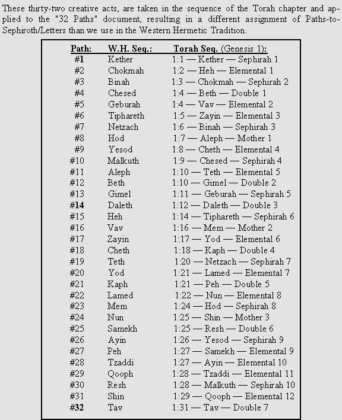
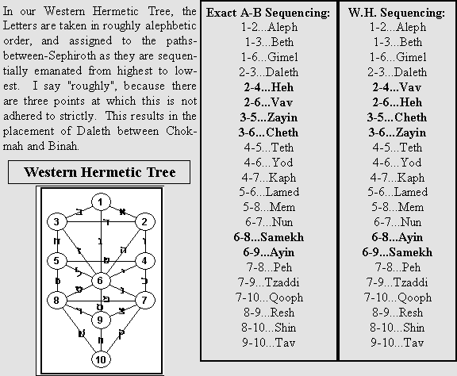
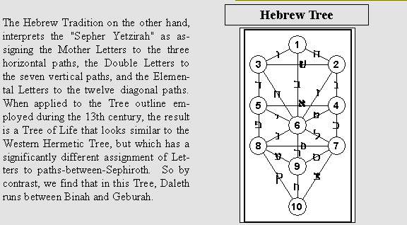
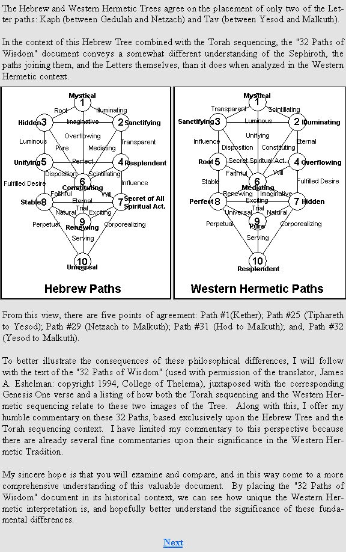

|
|||||||||||||||||||||
|
|||||||||||||||||||||
|  | |||||||||||||||||||||
|
|||||||||||||||||||||
|  | |||||||||||||||||||||
|  | |||||||||||||||||||||
|  | |||||||||||||||||||||
Shop ABC.com!
♦ A Bardon Companion
Rawn's Commentaries on Bardon's three books:
english |
french |
german |
italian |
polish |
roma |
spanish |
|
| partial translation |
russian |
slovakian |
♦ 2009 Lecture Series
Audio recordings of the series.
♦ Other Articles and Essays
♦ An Examination of
the Gra Tree of Life
Audio-visual presentations.
♦ Know Thy Self
A guide to recognizing the essential Self.
♦ Self-Healing Archaeous
Audio Lessons
english |
polish |
♦ The Magic of IHVH-ADNI (TMO) Audio Lessons
english |
polish |
♦ The Eight Temples Meditation Project
Exploring the planetary spheres of the Tree of Life.
english |
italian |
spanish |
polish |
♦ Permutations of the Tree: BOOK 231
A radical restatement of the 231 Gates.
english |
spanish |
french |
♦ Downloadable .MP3 audio files - Free
♦ Downloadable .PDF and eBook files - Free
♦ Excerpts from Rawn's public and private correspondence
♦ BardonPraxis Message Archive
Archive of the old discussion group.
♦ Bardon Questionnaire
Results of the 2003 survey.
♦ Links